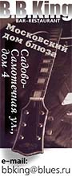
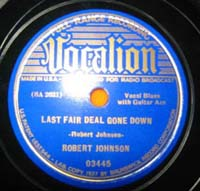
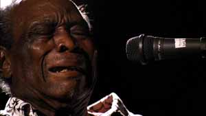
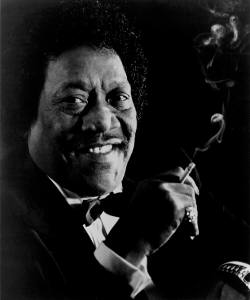
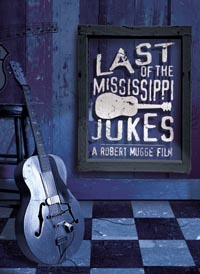
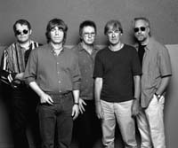
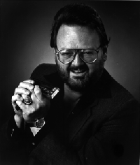
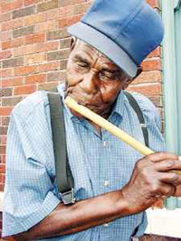
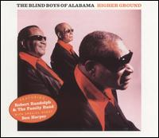
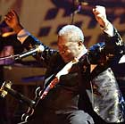

2003 |
зима |
|

|
 4 827$Пластинка Роберта Джонсона (Robert Johnson) на 78 об./мин. с записью песни "32-20", выпущенная в начале 1937г., была продана на аукционе Ebay за 4 827 USD. Считается, что из всех пластинок Джонсона, выпущенных при его жизни, именно эта сохранилась в наименьшем количестве коллекционных экземпляров. На стороне B – песня "Нарушена последняя честная сделка" (Last Fair Deal Gone Done). |
|
 Чествование продолжаетсяЖивая легенда кантри-блюза Дэвид "Медовенький" Эдвардз (David "Honeyboy" Edwards) в конце 80-х выпустил автобиографию "Мир мне не должен" ("The World Don’t Owe Me Nothing"), аудио-альбом того же названия и стал героем документального фильма "Медовенький" ("Honeyboy"). 18 февраля фильм получил главную премию на фестивале документальных фильмов в Лос-Анжелесе (the Pan African Film and Arts Festival 2003). И это уже его четвертая награда, полный их список можно посмотреть на сайте фильма. На момент съемок герою было 86 лет. Блюзовый дедушка вспоминал о своем детстве, рассказывал о человеческих и блюзовых корнях, пугал о жизни в Миссиссиппи до появления там "прав человека", рассказывал, что такое жизнь сборщика урожая и как надо на ходу запрыгивать в товарный вагон. И как организовывать гастроли по миссиссиппским кабакам: juke joints. В фильме есть интервью и с несколькими другими блюзмэнами, включая БиБиКинга. На март фильм включен в программу Мемфисского международного кино-фестиваля (Memphis International Film Festival). Уж если город Мемфис уже снес сам легендарный рынок Максвелл-стрит, историческое место постоянных дневных блюзовых уличных джемов и пристанище множества ночных блюзовых клубов, может, городской фестиваль найдет премию для фильма об одном из главных героев этого легендарного блюз-круга. |
Together we standДве могучие американские блюзовые организации объявили о своем грядущем объединении. "Блюзовый фонд" (The Blues Foundation) готовится в следующем году раздавать учрежденные им премии им.Дабл-Ю-Си Хэнди (W.C.Handy Awards) уже в 25 раз. Кроме того, Фонд работает на создание "Зала блюзовой славы" (Blues Hall of Fame) и музея Хэнди (Handy Museum), проводит международный конкурс "Вызов блюза" (International Blues Challenge) и Награду за общие достижения (the Lifetime Achievement Award). "Ассоциация блюзовой музыки (The Blues Music Association) помоложе, она создана всего пять лет и объединяет профессионалов от блюзовой индустрии: фирмы звукозаписи, продюсеров, промоутеров и т.д. Председатель ассоциации меняется каждый год, в нынешнем ее президентом является основатель и глава "Аллигатора" (Alligator Records) Брюс Иглауэр (Bruce Iglauer). Он сказал: "Пути наших организаций настолько параллельны, что мы элементарно достигнем наших целей быстрее, если пойдем вместе. Мы должны создать сильный работоспособный союз блюзовых профессионалов: музыкантов, продюсеров и распространителей – с блюзовыми пропагандистами и почитателями". |
Блюзовый туризм: быть или пока что еще нет?В миссиссиппской блюз-мекке, в городе Гринвуд работает Greenwood Blues Heritage Museum & Gallery. Здесь бывает до 70 посетителей в месяц… из Штатов и со всего света. Чуть западнее, в городе Лиленд принимает гостей музей Highway 61 Blues Museum. Его открыл бывший фермер Билли Джонсон, чьи родители содержали в городе аптеку, куда часто наведывались знаменитые местные блюз-персонажи. Недалеко, в Виксбурге путаются открыть общество "Willie Dixon-Vicksburg Blues Society" пытается открыть Vicksburg Blues Museum, пользуясь случаем, что в пригороде осободилось здание принадлежавшее YMCA. В Индианаполе, откуда вышел в мир БиБиКинг, местные блюз-фаны пошли тропой сотрудничества с краеведческим музеем, и открыли в The Tunica Museum свой блюзовый раздел. Добавление в блюз-туристское меню вносит Мэри Ф.Харт-Райт, бывшая школьная учительница из Чикаго. Для нас существеннее то, что она – внучка прославленного фолк-блюзмена Миссиссиппи Джона Харта (Mississippi John Hurt). В миссиссиппский город Авалон она из глубинки перевозит дом Джона Харта – трехкомнатную фермерскую хибару. "Всю свою жизнь я помню эту хижину в поле. Я всегда хотела что-то с ней придумать. Меня влечет к ней всю жизнь. Сейчас я представляю, что она станет местом, куда будут приходить представители самых разных культур, независимо от расы, чтобы отдать должное и понять нашу историю и культуру, откуда мы вышли" (Все-таки Мэри осталась в душе учительницей!). Она уже потратила не одну тысячу личных сбережений на переезд и ремонт. К прежнему месту стоянки хижины блюз-пилигримы стекались со всего мира, оставляя не только цветы, но и медиаторы и разнообразные моджо. На презентацию хижины-музея Джона Харта прошлым летом съехалось около трехсот гостей со всего мира. Но и сегодня Харт-Райт пока лишь планирует, что музей будет работать день или два в неделю, а она будет вести в нем экскурсии. В помощь совершаем блюзовое поломничество некто Steve Cheseborough написал путеводитель по блюзовым достопримечательностям Миссиссиппи: "Blues Traveling". |
"Блюз в полночь" назначен на 11 марта… и другие вести аудио-записи. Bobby "Blue" Bland"Blues At Midnight" - название нового альбома Бобби "Грустного" Бланда (Bobby "Blue" Bland), классика старой школы блюзового вокала. В январе нынешнего года ему исполнилось 73. В 47м он переехал в Мемфис, где стал участником юношеской блэк-группы с банальным заголовком "Mиниатюры"(Miniatures). Зато в этой группе играли небанальные будущие звезды: Джонни Эйс (Johnny Ace), Джуниор Паркер (Junior Parker), Роско Гордон (Rosco Gordon) и его блюзовая светлость БиБиКинг (B.B.King). Они остались друзьями на всю жизнь, помогая друг другу по жизни и выступая вместе на сцене. Дуэты Кинга и Бланда увековечили на виниле ироничную задушевность их совместных блюзов. Ветеран Бланд может украсить мундир множеством регалий. У него Награды за общие достижения (Lifetime Achievement Award ) и от Грэмми, и от Блюз Фаундейшин (Blues Foundation); его имя – в Зале славы рок-н-ролла. Various on Tone-CoolНа 19-м году существования блюзовый лейбл "Тоун-Кул" (Tone-Cool Records) отмечает выход 50-го альбома в своем каталоге выходом "Первого тома истории "Тоун Кул" (The Story of Tone-Cool, Vol. 1). Среди "клиентов" лейбла множество славных имен: от наиболее успешной по тиражам альбомов певицы-гитаристки Сюзан Тадеши (Susan Tedeschi), популярнейшего продюсера блюзовых записей и одновременно вокалиста-клавишника Тони Зет (Tony Z) и созданной СРВ (SRV) группы "Тридцать три несчастья" ("Double Trouble") до дуэта традиционалистов "Пол Ришел и Энни Рэйнз" (Paul Rishell & Annie Raines), великолепных калифорнийских нео-блюз-свингеров "Род Пьяцца и Могучие летуны" (Rod Piazza & The Mighty Flyers), гитариста-виртуоза для гитаристов, уставших от традиций, Рика Холмстрома (Rick Holmstrom). Плюс к этому потомственный гитарный блюзовик Бернард Эллисон (Bernard Allison) и сенсация прошлого года "Северо-миссиссиппские все – звезды" (North Mississippi Allstars). Little Anthony & Sugar Ray, David Maxwell и Mike Welch – тоже отсюда. Все они многократно приносили лейблу разнообразные блюзовые награды, включая Грэмми и им.Дабл-Ю-Си Хэнди.  Various in Last of the Mississippi Jukes"Последний из Миссиссипских кабаков" (Last of the Mississippi Jukes) – название аудио- и двд-альбома, назначенного к выпуску на 18 марта лейблом "Убежище" (Sanctuary Records). Название фильма ясно указывает, что это посвящение современному миссиссиппскому блюзу, сельским танцплощадкам и кабакам. Для документалиста Роберта Мюджа (Robert Mugge) это уже второе обращение к теме. В 1991 году, вместе с Роберт Палмером, он создал великолепную сагу "Глубокий блюз" (Deep Blues). Неэстрадная современная музыка является главной его темой вообще. Всего он создал 21 фильм, вот название некоторых: "Госпел по Элу Грину" (Gospel According To Al Green) – 1984; "Ритм-Энд-Заливы: Дорожная карта луизианской музыки" (Rhythm 'N Bayous: A Road Map to Louisiana Music) – 2000; "Сонни Роллинз, колосс саксофона" (Saxophone Colossus with Sonny Rollins) – 1986; "Соберемся у реки: Праздник голубой травы" (Gather At The River: A Bluegrass Celebration) – 1994. (Мне кажется, я большой поклонник творчества этого Мюджа, хотя видел только один его фильм про глубинный блюз - АЕ). Сам Мюдж говорит, что его вдохновляет личный опыт посещения таких заведений, где его "захватывает неповторимая атмосфера прокуренных, небольших, слабоосвещенных залов, где гармоничен музыкальный союз черных и белых; где местные музыканты играют на великолепном уровне; где поют от всего сердца и от полуночи почти до рассвета".
 Yardbirds"Домашние птицы" (Yardbirds), британский изначально-блюз-бэнд, завершивший свое существование как сайкоделик-рок-группа, после 35-летнего перерыва в дискографии выпускает 22 апреля новый альбом "Птичляндия" ("Birdland"). Мужеству этих людей можно только позавидовать. В попытке во второй раз войти в ту же реку их поддерживают их личности, увесистые в поп-рок-мире: Стив Вай, Брайан Мей, Джеф Бек (бывший лидер группы, ныне появляющегося только как гость на записи), и пр. Из оригинальных "домашних птиц" остались только двое: ритм-гитарист Крис Дрежа (Chris Dreja) и барабанщик Джим МакКарти (Jim McCarty). Лидер-гитаристом стал Джиппи Мэйо (Gypie Mayo), бывший участник славной буги-блюз-группы "Доктор Айболит" ("Dr. Feelgood"). На губной гармонике играет Алан Гленн (Alan Glen) бывший участник хеви-блюз-бэнда "Девять ниже нуля" ("Nine Below Zero"). Джон Иден (John Idan) запевает и играет на бас-гитаре. У него славная внешность именно с точки зрения ностальгии по британским психоделическим 60-м. Кстати, вот список песен альбома, с указанием, где какой гость "приседал" (sit-in):
Список указывает на абсолютно неблюзовое содержание альбома. Почему новости о нем появились во всех блюзовых источниках? Видимо, бюджет с участием Слэша обязывает к всеобхватывающей рекламе. |
Закончили земной путь 6 января объявлено о кончине на 59м году жизни певца и харпера Ричарда Ньювелла, известного как Кинг Бисквит Бой (Richard (King Biscuit Boy) Newell). Канадского происхождения, он играл блюз на губной гармонике с 1961 года. За четыре десятка лет он выпустил 8 сольных альбом, так и не добившись большой известности. Однако он был бесконечно предан блюзу, и за долгую карьеру успешно сотрудничал со многими прославленными корифеями жанра, включая такие имена как Muddy Waters, Otis Span, Etta James, Joe Cocker, Dr. John. Сценическое прозвище получил от гитариста группы "Группа" (The Band) Ронни Хокинса (Ronnie Hawkins) – в честь радиопередачи, которую вел харпер Сонни Бой Виллиамсон (Sonny Boy Williamson). И, хотя поначалу оно ему не нравилось, прозвище прижилось. 1 марта объявлено о кончине на 95 году жизни флейтиста и барабанщика Оты Тернера (Otha Turner). Флейта и барабаны - характернейшее сочетание для доблюзовой афроамериканской музыки. Сохранившаяся только в американской глубинке, эта традиция связывает блюз с африканской музыкой. И в записи последнего альбома Тернера участвовала группа сенегальских барабанщиков и перкуссионистов. Тернер появлялся в нескольких документальных фильмах о народной музыке. Его альбом "Everybody Hollerin'" 1997 года был назван журналом "Rolling Stone" в числе лучших 10 блюзоых альбомов года.Его группа под названием "Rising Star Fife and Drum Corps" была постоянным участником фестиваля "Sunflower River Blues and Gospel Festival". Обычно именно они открывали фестиваль блюзовым маршем. "Это незабываемо – как он маршировал с флейтой и большим барабаном от станции к сцене, и с ним, играя, шли участники группы. Без него фестиваль уже не будет таким, как был," - сказала ответственный секретарь фестиваля Ивонна Стэнфорд. |
|
 GRAMMY-2003уважаемые имена в забавных местах. В нынешнем году, стараясь задобрить российских призывников, 45я по счету церемония раздачи граммофончиков Американской академии звукозаписи была приурочена к 23 февраля. Как всегда, не обошлось без путаницы - к моменту оглашения их победителей, у нас День защитника Отечества уже давно закончился, и началась банальная рабочая неделя. Что не мешает порадоваться за наших. Получив сразу два граммофончика, БиБиКинг (B.B.King) довел количество своих G-трофеев до чертовой дюжины. Один - за альбом "A Christmas Celebration of Hope", в категории "Традиционный блюзовый альбом" (Traditional Blues Album). Другой - за трек из этого альбома "Auld Lang Syne", в категории "Инструментальная поп-запись" (Pop Instrumental Performance). Что уж в этом альбоме такого традиционного, если он даже не очень блюзовый?.. "Auld Lang Syne" - это, кажется, шотландская традиционная мелодия… Но кто скажет, что БиБиКингу не положена еще одна Грэмми?! За свои 78 лет он их заслужил гораздо больше, чем 13.
Свой первый граммофончик унес с процедуры Соломон Бюрк (Solomon Burke). Вообще-то он более сорока лет считался певцом в стиле соул… Но, по мнению американских звукозаписывающих академиков, в прошлом году именно 67-летний соулист записал "Лучший альбом современного блюза": "Не ставь на мне крест" (Contemporary Blues Album: "Don't Give up on Me"). Впрочем, альбом выпущен лейблом Fat Possum, специализирующимся на современном традиционном блюзе. - и это серьезная рекомендация.
"Слепые парни Алабама" (The Blind Boys of Alabama), любимцы нашего сайта, удостоены Грэмми в категории "Традиционный соул-госпел альбом" (Traditional Soul Gospel Album) за альбом "Выше ступенью" (Higher Ground).
Триумфатором стала подборка записей 75-летней, примерно, давности. Бокс-сет "Стеная и плача блюз - Миры Чарли Пэттона" ("Screamin' and Hollerin' The Blues: The Worlds of Charley Patton") удостоен "Грэмми" по трем номинациям: "Набор или специализированное издение" (Boxed or Special Limited Edition Package), "Исторический альбом" (Historical Album), "Лучшая аннотация" (Best Album Notes). Пикантно, что в категории "Альбом традиционного поп-вокала" (Traditional Pop Vocal Album) тоже победил альбом со словом "блюз" в названии: "Играя с друзьями - Беннетт поет блюз" ("Playin' With My Friends: Bennett Sings the Blues"). Его записал известный поп-джазовый крунер Тони Беннетт (Tony Bennett). Ему 76 лет. Правда, на записи альбома ему помогали и матерые попсовики, и тертые блюзовики: Diana Krall, Stevie Wonder, Sheryl Crow, Ray Charles, Bonnie Raitt, K.D.Lang, Billy Joel, Natalie Cole. Альбом получился ласковым и мастерски-умиротворяющим. Кстати, и БиБиКинг принимал участие в его записи, так что возникает вопрос - может ли он засчитать в свой актив 14-й граммофончик? Или это, говоря по-спортивному, скрытая победа? |
 БЛЮЗОВЫЙ САЛЮТоткрывает год блюза. Итак, официальное открытие года блюза состоялось. В Нью-Йорке, 7 февраля, в здании Radio City Music Hall. Постановщиком события выступил Мартин Скорсезе, тот самый, кто в 1976г. превратил прощальный концерт группы The Band в очень блюзовое событие, собрав на сцене Мадди Уотерса (Muddy Waters) и его блюзбэнд, Доктора Джона (Dr. John), Пола Баттерфилда (Paul Butterfield), Вэна Моррисона (Van Morrison), "Стэппл Сингерз" (the Staple Singers), Эрика Клэптона (Eric Clapton) и Боба Дилана (Bob Dylan). Состав участников концерта Salute to the Blues поражает еще больше! Этого списка хватило бы на большой блюз-фестиваль: B.B. King, Robert Cray, Buddy Guy, Bonnie Raitt, Aaron Neville, Keb' Mo', Dr. John, David Johansen, Vernon Reid, Shemekia Copeland, Mavis Staples, Gregg Allman, Chuck D, India.Arie, Billy Boy Arnold, Clarence "Gatemouth" Brown, Ruth Brown, Solomon Burke, Natalie Cole, Honeyboy Edwards, John Fogerty, Warren Haynes, Levon Helm, Larry Johnson, Angelique Kidjo, Chris Thomas King, Alison Krauss, Lazy Lester, The Neville Brothers, Odetta, Angie Stone, Hubert Sumlin, James Blood Ulmer, Jimmie Vaughan, Kim Wilson, Steven Tyler and Joe Perry of Aerosmith, Macy Gray, Mos Def, and The Jon Spencer Blues Explosion. (Кстати, здесь трое участников концерта 27-летней давности). На речи времени не было - музыка звучала пять часов кряду. Корреспондент "NYPost" пишет, что в шоу было много высоких моментов. Но зенит занял БиБиКинг, завершавший концерт. Он не только поразил корреспондента своим золотисто-шелковым фраком, но и в песнях "Sweet Sixteen" и "Payin' the Cost to Be the Boss" "доказал, что тишина (пауза) в блюзах важна так же, как ноты". Другим, кто пожинал восторги публики, был Кеб'Мо, который не только играл в хаус-бэндеи на акустической шестиструнке, электрической слайд-гитаре и банжо, но и исполнил сольную версию робертджонсовской "Love in Vain", продемонстрировав, что сам он молод, "но душа его очень стара". Молодая певица Индиа-Эриэ (India.Arie), специализирующаяcz в области изысканного джаз-соул-фолкового ланжа, представила "выдающуюся, рвущую душу версию классического блюза "Странный плод" ("Strange Fruit" Билли Холлидей). Соломон Бюрк (Portly Solomon Burke), сидя на троне красного вельвета, исполнил "могучую версию "Turn On Your Love Light". Когда он скомандовал утонченной ньюйоркской аудитории подняться на ноги и танцевать, он сам был единственным в зале, кто остался сидеть." И еще особых похвал удостоился Бадди Гай (Buddy Guy), который "равно естественно играл и акустический кантри-блюз "I Can't Be Satisfied," и жалящий чикагский блюз в "First Time I Met the Blues." Единственное, что не понравилось обозревателю - это проигнорированный британский блюз эпохи 60-х. "Эрик Клэптон должен был быть там", по его мнению. Концерт закончился во втором часу, но БиБиКинг, известный полуночник, еще более двух часов принимал желающих для беседы в своей гримерке. Концерт отснят, и его фрагменты будут использоваться в теле-сериале по истории блюза, который продюссирует Мартин Скорсезе. Билеты стоили от 50$ до 1250$. Концерт благотворительный, доходы будут направлены на финансирование программы "Год блюза".(подробности на этой странице, ниже) |
Ветераны блюзбэнда Мадди Уотерса вновь вместе.Когда Мадди Уотерс отошел от гастрольной деятельности, участники его легендарного блюз-бэнда, многоталантливые музыканты, и ранее являвшие способности лидеров и солистов, отпочковались в свой блюз-бэнд. Над названием долго головы не ломали. Название простенькое, но со вкусом: The Legendary Blues Band - на протяжении 80-х этот коллектив сохранял и обновлял маддиуотерсовский бэндовый саунд. В 90-х участники проекта пошли сольными путями, но не раз встречались вновь на сцене и в студии. Например, без их участия не возможно представить альбом-посвящение Мадди Уотерсу: The Muddy Waters Tribute Band - You're Gonna Miss Me (When I'm Dead & Gone) - записанный в 1996 году фирмой Telarc. В декабре 2002 года трое из участников блюзбэнда Мадди Уотерса вновь играли на одной сцене в кирпичном здании бывшей церкви, перестроенной под концертную студию Blue Heaven/APO Records. Владелец фирмы Чэд Кэйсем, эксперт по звуку и звукозаписи, в восторге от акустики этого зала. Собрать вместе бывших соратников и сподвижников - задача не простая. И упустить такое благоприятное стечение обстоятельств - легендарные музыканты и великолепная акустика - было бы непростительно. Концерт записан и будет опубликован. Интимная атмосфера относительно небольшого зала (450 мест) так же была благоприятным фактором. Сам Мадди говорил, что ему больше по сердцу выступления перед небольшой аудиторией, когда проще наладить общение со слушателем. Барабанщик "Пучеглазый" Вилли Смит (Willie "Big Eyes" Smith) получил свое прозвище от самого Мадди Уотерса. Он служил в его блюзбэнде с середины 60-х. В конце 60-х в маддиуотерсовском блюзбэнде Отиса Спэна сменил за фортепиано Пайнтоп Перкинс (Pinetop Perkins), сегодняшний блюзовый патриарх, записавший в 90-х ряд блистательных альбомов. Кстати, Пайнтопу Перкинсу летом нынешнего года исполнится именно 90 лет со дня рождения. Заметное место в сегодняшнем традиционном блюзе занимает гитарист Боб Марголин (Bob Margolin). Все эти трое играли в маддиуотерсовском блюзбэнде до 1980 года, до года его расформирования. Карей Бэлл (Carey Bell), прекрасно знакомый любителям губной гармоники, играл и записывался с Мадди Уотерсом относительно недолго. Но ему, как и Бобу Марголину, и Вилли Смиту, первую известность принес именно блюзбэнд Мадди Уотерса. Открывал концерт Джимми Ди Лэйн (Jimmy D. Lane & Blue Earth), один из самых интересных сегодняшних гитаристов, органично сочетающий блюзовую ритмику и тяжелое звучание. Он имел особую причину для участие в этой программе. Джидди Ди Лэйн - сын умершего 5 лет назад Джимми Роджерса, верного соратника Мадди Уотерса, с которым были записаны многие из вечнозеленых чикагских блюзовых стандартов. |
|
|
|
 4 ГАРМОНИСТА - аншлаг в ЦДХ!
4 ГАРМОНИСТА - аншлаг в ЦДХ! БЛЮЗОВЫЙ ДЖЕМ
БЛЮЗОВЫЙ ДЖЕМ